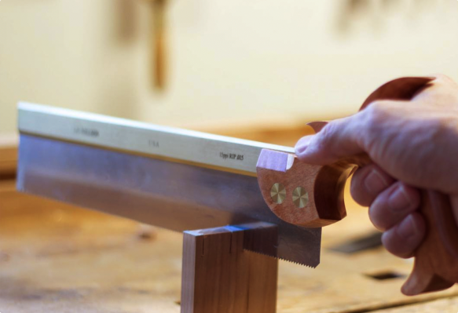
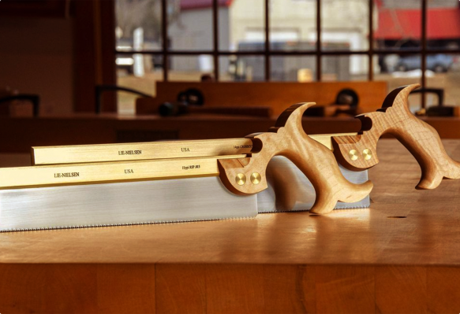
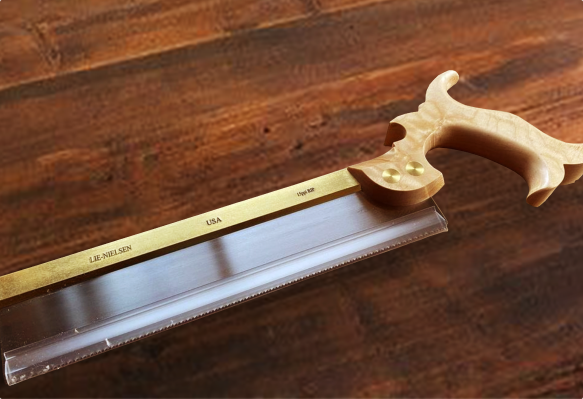

Dovetail Saw with Cherry Handle
(9)
$175
- Equipped with a native hardwood cherry handle built for optimal grip
- Blade made from high quality Swedish Steel blade
- Tapered blade which makes it easier for maneuvering
(9)
We believe that our Back Saws are the finest made anywhere. They are based on a British saw made in 1830. Owning one is like having a piece of woodworking history in your shop.
Since dovetailing is a ripping operation, where the kerf is running with the grain, our Dovetail Saw has its teeth filed to a rip profile. Solid milled Brass back, finest quality Swedish Steel blade, Cherry handle and traditional Brass split nut saw bolts.
With 15 points per inch, this Saw strikes an ideal balance between surface finish and speed. Teeth are set at .003" per side for a .026" kerf — narrow to help you cut straight.
Sawing:
Lie-Nielsen saw has been precision set, filed and test cut in hardwood before it leaves the shop. The proper grip for the Lie-Nielsen saw is to wrap the middle, ring, and little fingers around the handle with the forefinger pointing along the Brass back. This will give you better control over how you saw tracks.
When starting a cut, it is not necessary to tilt the saw at an angle when cutting, just hold the saw blade so it is flush with the top of the stock. Start sawing slowly and evenly with very little downward pressure, using as much as the blade as possible. Be sure to have the saw line up properly from the beginning because even with a slight set, the saw will be hard to correct if it starts to cut away from the line.
Practice on some scrap wood to acquaint yourself with how your saw cuts. If your saw seems to “grab” the wood and jump around in the kerf, you're using too much downward pressure. Ease up a bit and take long slow strokes.
Handle:
The Split Nut Bolts on our open handle saws require a special Split Nut screwdriver to tighten or remove. Closed handle saws have a conventional bolt and nut. Split Nut screwdrivers and the slotted screwdrivers designed to fit our Tenon Saw nuts are available from us.
For More Information, click here to download a PDF of the instructions for this tool.
Sharpening:
The saw's blade is very hard (50-52R) and will stay sharp for a long time. When in need of sharpening, you can use a 5" double extra slim taper file to file the teeth on the dovetail saws or a smaller 4" extra slim taper file, which will make it easier to line up the file with the gullet for beginning filers.
Take a couple of pieces of thin, straight scrap and clamp them in your vise on either side of the blade so that the top of the scrap is flush with the bottom of the gullets on the teeth. Take your file and take one swipe per tooth. Notice the small groove the file leaves in the wood. This is a good gauge to show you how deep you're filing. The teeth are so fine on your saw that no more than one pass per gullet should be necessary.
Visit our Youtube channel for more tips on saw sharpening.
Maintenance:
Keep a coat coat of oil or silicon spray on your saw's blade when not in use. This will minimize the chance of rust forming on the blade. The blade is high carbon steel with no rust-inhibiting alloys added. The handle on your saw is oiled and buffed with wax to produce a natural finish. Wipe with oil as desired to refresh.
Proposition 65 Notice: Bronze and brass alloys contain lead, a chemical known to the State of California to cause cancer and birth defects, or other reproductive harm. Wash hands after handling.
@karlholm.design
@cedar_cabin_creations
@valley__carpentry
Tag us on instagram @lienielsentoolworks or use the hashtag #LieNielsen to share your tools/creations to be featured here!
Tapered Dovetail Saw with Cherry Handle
(28)
Carcass Saw with Cherry Handle
(61)
Tenon Saw
(103)
Tenon Saw with Cherry Handle
(14)
1 2
I like the saw, but you definitely get what you pay for. The saw was definitely sharp, I just wish the blade itself was just a little bit thicker, since it bends really easily. Was cutting wood for my fire pit, and because of the slimness of the blade, the saw was consistently getting stuck in the wood, and wound up cutting me, when I had to pull hard to get it unstuck. I just feel like if the blade were a little thicker it would definitely make the saw sturdier. Besides that, it is a good saw to use for LIGHT sawing and woodworking.
Was this review helpful?
This saw is sharp, light and easy to use. Seems a very good value. Not for beginners but it gets the job done. I had this saw for 2 years now and it is still in good condition!
Was this review helpful?
I cut wood about 6" thick and had no problem what so ever. It works great and It has a nice grip very firm and strong so is easy to handle.
Was this review helpful?
I really liked the cheap price and look of this saw that is why I bought it. Sadly, when I actually tried using it the saw was completely useless at cutting. I thought maybe I am using it wrong.......The only other good point, other than its price, is the short size and comfort to hold.
Was this review helpful?
1 2 3